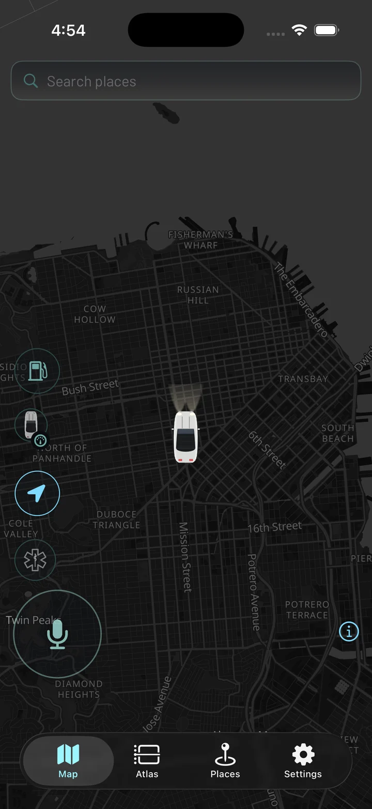
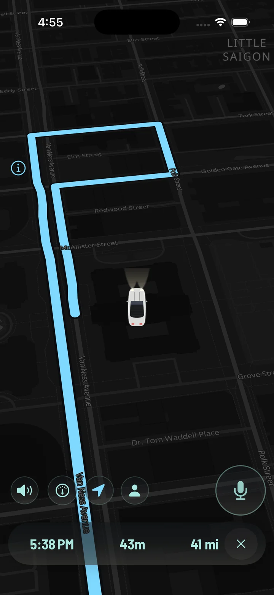
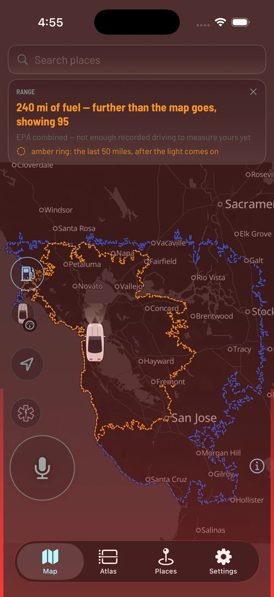
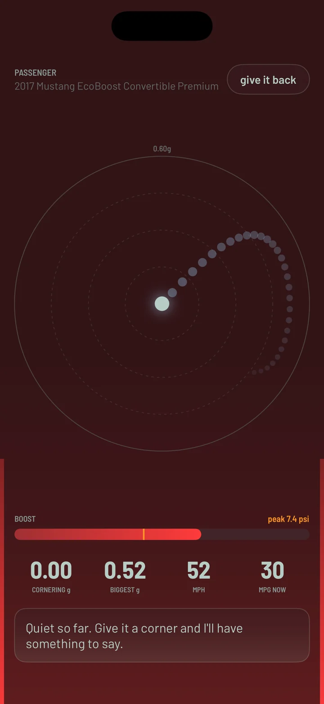
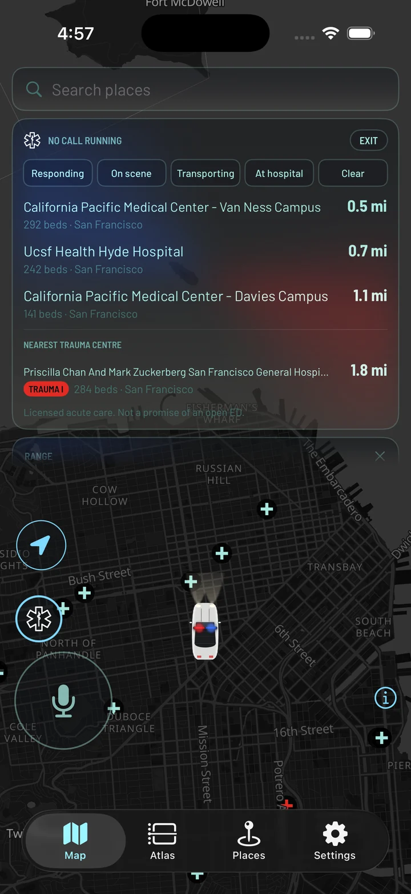

A navigation app built for one car and one driver.
It gives directions, it knows what the engine is doing, and it keeps a record of everywhere I've driven. The part that makes it different is what it doesn't do: nothing about where I go leaves my own equipment.
The idea
When you type an address into a normal maps app, that address goes to a company. So does your position, continuously, the whole way there. That's the deal — you get very good directions and they get a detailed record of your life.
Mapblock is my attempt at the first half without the second. The maps, the search box and the turn-by-turn directions all run on a computer at my house. The phone talks to that and to nothing else. No account, no company, nobody's servers but mine.
It covers the Bay Area, because that's where I drive.


Getting there
Search for somewhere, pick it, go. It talks you through the turns, re-routes if you miss one, and keeps the screen awake so it can sit on the dash.
The car on the map is my actual car — a white Mustang convertible, drawn from above, with its headlights on after dark. That sounds like a small thing. It is the reason I enjoy using it.
The car
There's a small adapter in the car's diagnostic port — the same socket a mechanic uses. It lets the app read what the engine is actually doing while I drive, so the map can show things no phone could work out on its own.
The whole screen warms up when the turbo comes on. Colour and strength are mine to set.
The route you just drove gets coloured in — by how hard you cornered, how economical you were, or how much boost you were using.
Coolant, intake, fuel trim. If the check-engine light comes on it can tell me why.
Every trip gets scored on smoothness and economy, and a running note of anything the engine looks unhappy about.
Fuel
Not "240 miles" as a number, but the actual shape of it on the map — every road I could reach on what's in the tank, worked out from the fuel level and the mileage I've really been getting rather than the sticker figure.
The inner ring is the part after the low-fuel light comes on. It's the answer to "can I make it home, or am I stopping?"


Passenger mode
Hand the phone to whoever's in the other seat and it stops being a map. Cornering forces draw themselves as a little trail, the boost gauge holds its peak, and it makes the occasional dry remark about the driving.
It is completely unnecessary and it's one of my favourite parts.
Looking back
Every drive is kept — the route, how long it took, where it started and ended, what was playing. Over time that turns into something more interesting than a list of trips: the places I actually go, the times I actually go there, how a familiar drive changes with traffic.
All of it lives on my own machine. It exists because I wanted it, and it stops existing the moment I decide it should.
One extra mode
I'm an EMT, so there's a mode built for that. Switched on, it puts hospitals on the map — from the state's licensing register rather than general map data, so it knows which ones are real receiving facilities and what level of trauma centre each one is. It'll also run a call clock with one-tap stage marks, and it stops grading my driving, because the score is calibrated for a commute.
It records times and places only. Never anything about a patient, and it offers no medical guidance of any kind — that isn't an app's job.
Realistically nobody but me will ever turn this on, and mostly I turn it on for fun.

Nowhere. The maps, the search and the directions are all served by a computer at my house, reached over my own private network. No third party is involved in any part of it — not for the map tiles, not for looking up an address, not for working out a route.
Traffic is the one thing that comes from outside, and it's fetched the careful way round: the whole public incident feed is downloaded on a timer and searched on my side, so the request never says where I am or where I'm going.
There's no account to make and no company behind it, because there is no company. It's one app, for one car.
Not really, and that's not me being coy. It only works if you have the server half running at home, the map data for your area, and an adapter in your car — and half of what makes it good is that it's built around one specific Mustang.
It's here because people kept asking what I'd been building. Now there's a link.